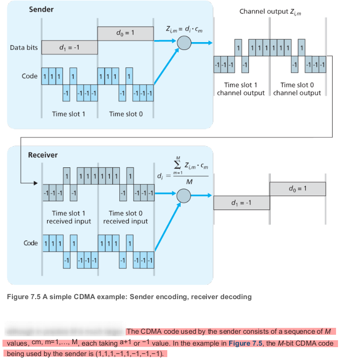
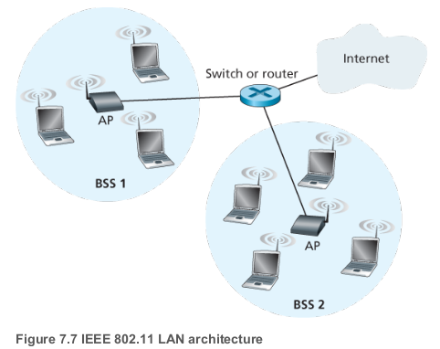
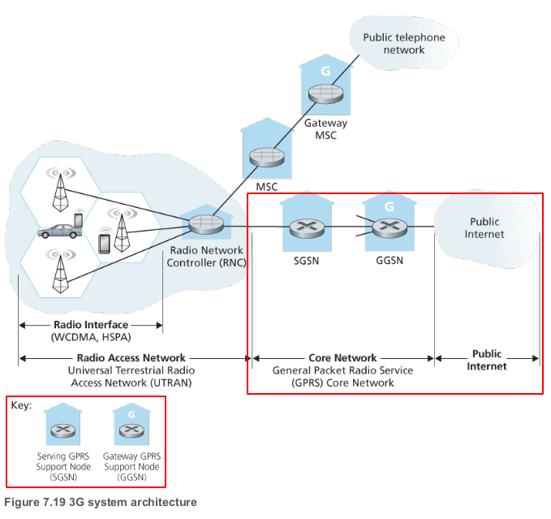
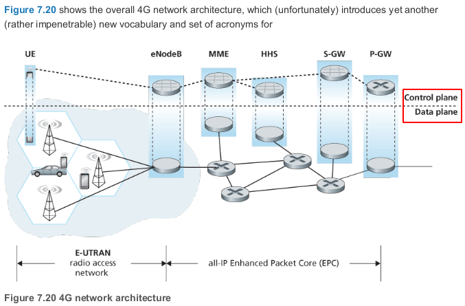
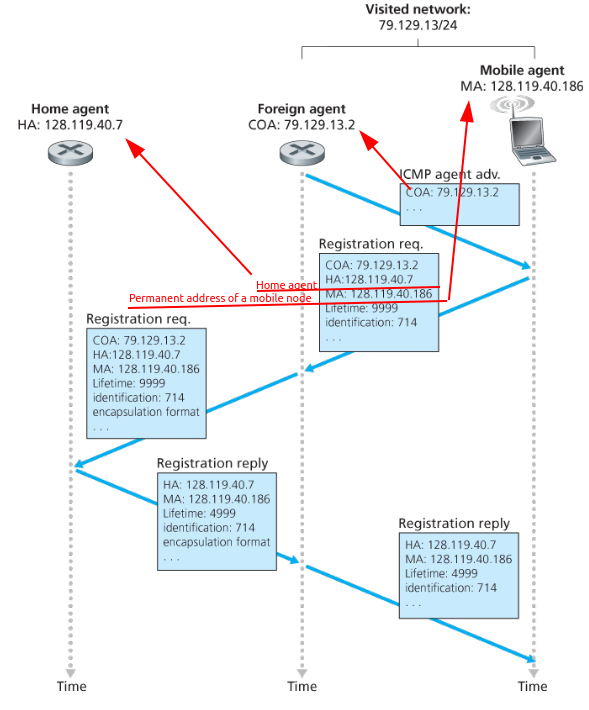
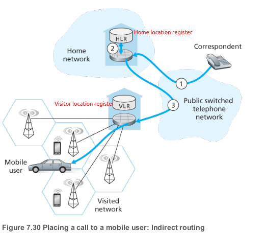

Wireless
Modes
| Infrastructure | Ad-hoc network |
|---|---|
| Hosts associated with a base station | No such infrastructure |
| Host can only communicate with base, not with each other | Hosts themselves must provide for services such as routing, address assignment, DNS-like name translation, |
| Single hop | Multiple hops | |
|---|---|---|
| Infrastructure (e.g., APs) |
Hosts connects to base station(WiFi, cellular, WiMAX) which connects to larger Internet | Host may have to relay through several wireless nodes to connect to larger Internet: mesh net |
| No infrastructure | No base station, no connection to larger Internet(Bluetooth, ad hoc nets) | No base station, no connection to larger Internet. May have to relay to reach other a given wireless node MANET, VANET |
CDMA
- Code division multiple access
- Channel partitioning protocol

WiFi
- IEEE 802.11 wireless LAN

IEEE 802.11 standards
- All 802.11 standards share some common strcuture:
- All use the same medium access protocol, CSMA/CA
- The same frame structure for their link-layer frames
- The ability to reduce their transmission rate in order to reach out over greater distances
- All backwards compatible
- Differences in physical layer
| Standard | Frequency Range | Data rate | Description |
|---|---|---|---|
| 802.11b | 2.4 GHz | up to 11 Mps | Unlicensed frequency band, may compete for frequency spectrum with 2.4 GHz phones and microwave ovens. |
| 802.11a | 5 GHz | up to 54 Mbps | Have a shorter transmission distance for a given power level and suffer more from multipath propagation |
| 802.11g | 2.4 GHz | up to 54 Mbps | Again 2.4 GHz |
| 802.11n | 2.5 GHz and 5 GHz | up to 450 Mbps | uses multiple input multiple-output (MIMO) antennas i.e., two or more antennas on the sending side and two or more antennas on the receiving side that are transmitting/receiving different signals |
| 802.11ac | 5 GHz | up to 1300 Mbps | MIMO. Stations also may transmit to multiple stations simultaneously, and use “smart” antennas to adaptively beamform to target transmissions in the direction of a receiver. This decreases interference and increases the distance reached at a given data rate |
Mobile Networks
- Natural strategy is to extend cellular networks so that they support not only voice telephony but wireless Internet access as well. Ideally, this Internet access would be at a reasonably high speed and would provide for seamless mobility, allowing users to maintain their TCP sessions while traveling.
3G
- Goal: leave the existing core GSM cellular voice network untouched, adding additional cellular data functionality in parallel to the existing cellular voice network.

| SGSN | GGSN |
|---|---|
| interacts with the cellular voice network’s MSC for that area | acts as a gateway |
| Providing user authorization and handoff | connecting multiple SGSNs into the larger Internet. |
| maintaining location (cell) information about active mobile nodes | To the outside world, the GGSN looks like any other gateway route |
| performing datagram forwarding between mobile nodes in the radio access network and a GGSN | the mobility of the 3G nodes within the GGSN’s network is hidden from the outside world behind the GGSN. |
- The RNC connects to both the circuit-switched cellular voice network via an MSC, and to the packet-switched Internet via an SGSN. Thus, while 3G cellular voice and cellular data services use different core networks, they share a common first/last-hop radio access network
LTE
- As know as 4G LTE (Long-Term Evolution)
- Two important innovations over 3G system
- All-IP core network - both voice and data are carried in IP datagrams to/from the wireless device
- Enhanced radio access network - uses a combination of frequency division multiplexing and time division multiplexing on the downstream channel, known as orthogonal frequency division multiplexing (OFDM)

Mobile IP
The mobile IP standard consists of three main pieces:
- Agent discovery
- Registration with the home agent
- Indirect routing of datagrams

- Figure 7.29 Agent advertisement and mobile IP registration
Mobile Cellular networks
- Like mobile IP, GSM adopts an indirect routing approach, first routing the correspondent’s call to the mobile user’s home network and from there to the visited network
